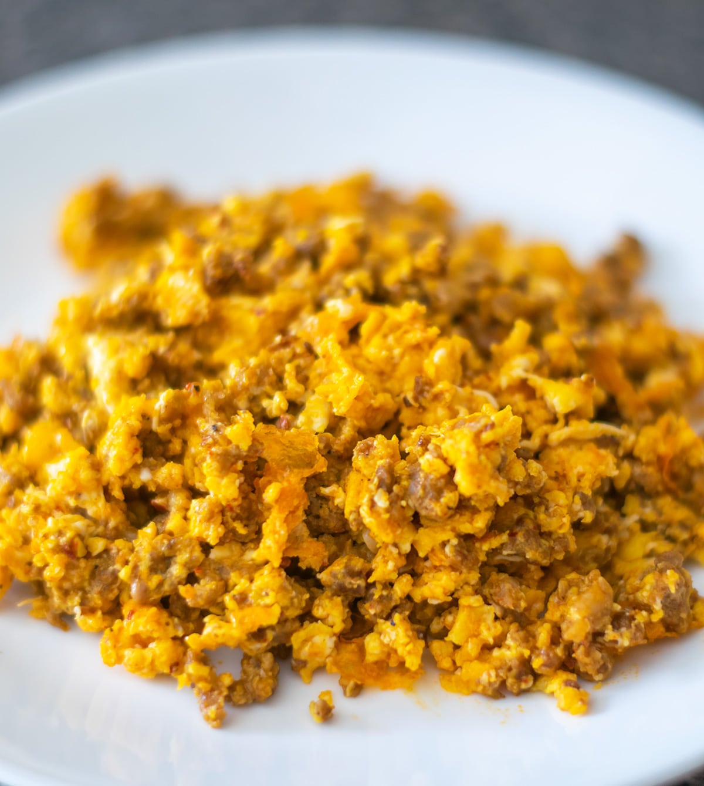

Scrambled Eggs Recipe
Odin Recipes

Description
Ingredients
- 2 large white eggs
- 2 ounces of egg yolks
- 50 g of spanish chorizo
Steps
- Heat a pan up
- As soon as the pan is hot, add the chorizo directly to the pan
- Crack the two eggs and beat together with the egg yolks
- As soon as the chorizo starts getting cripsy add the egg and yolk mix
- Ensure you stir the mix constantly so it cookes evenly
- Enjoy!